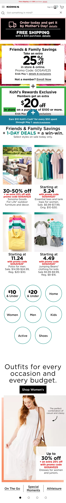
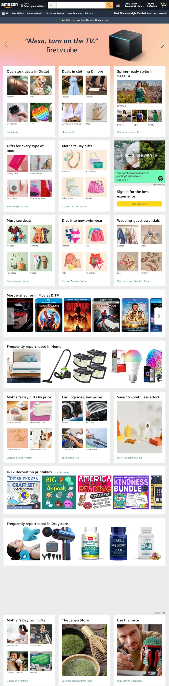

Repetition
Kohl's
kohls.com Kohl's has repeating elements of links under each section of products. The format of the product cards repeat as well as the category links under each section.
White Space and Clean Design
Microsoft
microsoft.comMicrosoft provides plenty of whitespace in their web design, letting the products speak for themselves. White space and a clean design make the page look uncluttered and open.
Alignment
Amazon
amazon.com Amazon product cards alignment allows tons of products to be seen without confusing the shopper with too much at once. The alignment both horizontal and vertical help the viewer to scan across and down the page.